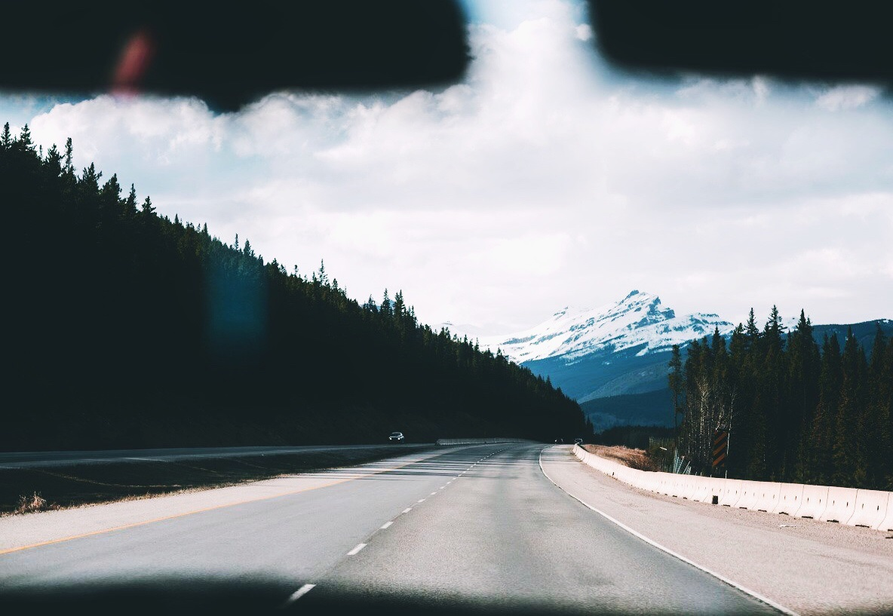

Creating a photo while traveling is something incredible. I'm trying to make high-quality photographs that would reflect all the refinement and majesty of nature. Mountains, fog, forests, heavens - it's great! That's what I want to convey to the viewer!
Our photos really help you to imagine yourself in one or another area. The quality and composition of the photo is so high that you can truly feel yourself somewhere in the mountains or in heaven.
We use different devices: cameras, smartphones and special equipment. All these efforts are made to enable you to feel the beauty and refinement of our extraordinary atmosphere!
Try to imagine yourself outside this photo, and find yourself in this extraordinary place.
Here are some of our features
Before we create a new photo, we think of it in trinkets. In order for you to enjoy the viewing of our photos, we spend the strength and money for that.
For our photos to be placed on the desktop of a smartphone or computer, for example, you need to correctly determine the size - that's what we do as it should.
High quality is one of the most important points of high-quality photography. In order for you to use these photos in your projects, we really need to make photos as good as possible. This is our feature.